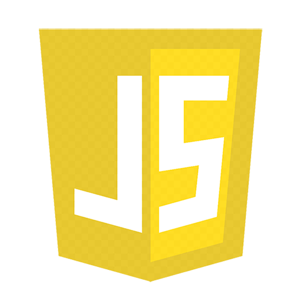
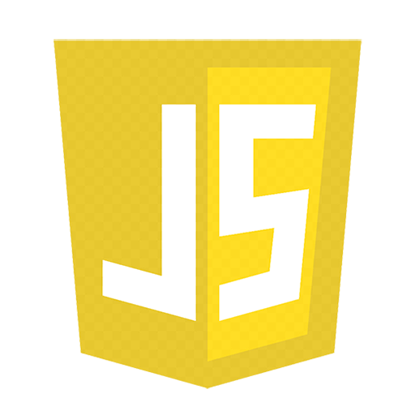

What is fullstack web development?
A full stack web developer is a person who can develop both client and server software.
In addition to mastering HTML and CSS, he/she also knows how to:
- Program a browser
- Program a server
- Program a database

 

A full stack web developer is a person who can develop both client and server software.
In addition to mastering HTML and CSS, he/she also knows how to: